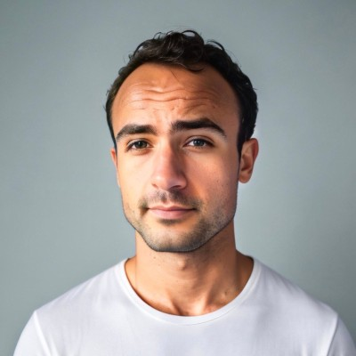

Hi there! I'm Luca (🗣️: 🇬🇧🇮🇹~🇩🇪), software architect & network R&D engineer. Interested in the quiet parts of the internet — routing, control planes, and the systems no one notices until they break. Based in Munich, Deuschland Currently open to new roles 🌍
About
I spent my first year writing application backends and slowly realised the interesting bugs lived two layers down. Now I work mostly between L3 and L7 — routing, service meshes, and the quiet protocols people lean on without thinking about.
I write essays about boring infrastructure, ship side projects that are at least 40% jokes, and am slowly being convinced that the hardest part of distributed systems is the part where humans agree.
Projects
10GbE NAS build2026
Writing
The Deliberate MachineMay 2026
Contact
Pass by to sai hi!
lucagpinta@proton.meEmail
in/luca-g-pintaCareer